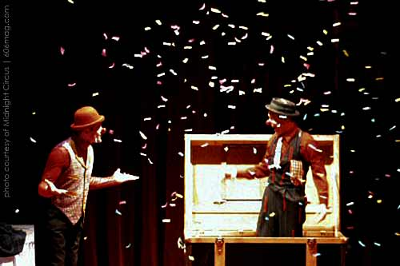

 |
I have never been to a circus. I have been to various fairs and carnivals , all when I was young, and I have encountered what is probably near the average number of clowns for a 26 year-old American. Also, I know a guy who tends to lions for a living—I don't think that ‘tames' is the correct word for it—but in a zoo, and I assume not in an iron-barred cage under a giant tent, though I admit I have never seen him at work. The circus, though, sounds pretty wonderful: a diverse commune of crazy acrobats and drunken clowns, amazingly strange examples of individuals who become their profession (I AM a Fire-Eater). The image that usually pops into my head is that of a traveling Depression-era Dust Bowl freak show. Granted, that is more carnival than circus, but like I said, I have never been to a circus, and though I have never been to a Depression-era Dust Bowl carnival either, I do own a television. And perhaps I am going too far in classifying my audience, but whose circus-and-carnie knowledge doesn't originate from TV and movies? I think that familiarity with Big Top Pee-wee or Dumbo or even Freaks is more common than extensive personal memories of abused bears riding tricycles or of homeless jackasses flying out of cannons. No, I am not writing to decry the modernizing of the crazy, romantic traveling circus. But I am curious about present-day circus employees. The show must go on , somewhere, and I wonder who these people are and where they come from (the lion guy I know came from a zoology degree in Oregon), not to mention what the child runaway percentage is at your average circus. For those of you in Chicago with as much carnival curiosity as I do, there is an answer. And it is not time travel back to the 1930s—the Midnight Circus is a group that does the traveling, but it is based right here in Chicago. The husband and wife team that began this troupe paired his clowning skills and her acting background with stomach cramping monologues and oversized shoes. The result is a theatrical clowning extravaganza. The Midnight Circus has performed around Chicago, from vacant lots to the Daley Plaza, but they also travel around the States and around the world. Most recently, the company performed at a jazz fest in Germany. The Midnight Circus, “the forefront of the new circus movement”, also manages the Circus Factory, which is just what you were hoping it was—circus school. That's right, aspiring circus talent can hone their skills in classes such as Circus Arts 101 (and Intermediate), Aerial Arts, Juggle Jam, and Trapezery. Amazing. Visit www.circusfactory.net . They even offer kid's classes for future circus lifers. |